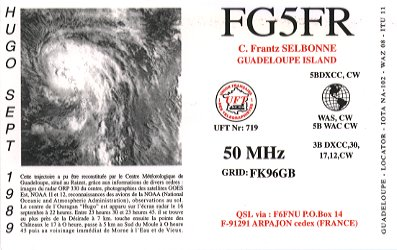
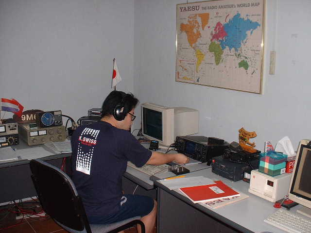
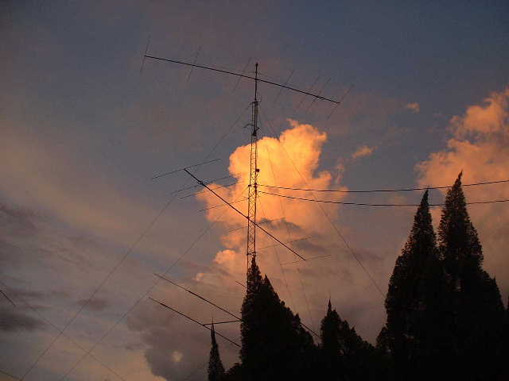
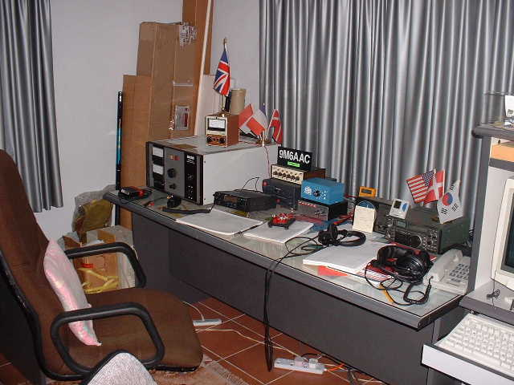

|
Flash ! DX
|
|
Flash ! DX
|
[Back Issues Apr.2002]
TIME:UTC(JST-09:00)
Report from JA1RJU (PM95sq)
30.Apr.2002(15:00e)
*VK-TV 01:30- 46.172 --
VK8RAS 09:20- 50.047 CW Beacon
VK6RSX 09:20- 50.304 CW Beacon
VK4FNQ 09:28 50.110 SSB
VK8RAS 12:45- 50.047 CW Beacon
VK6RSX 12:45- 50.304 CW Beacon
VK8MS 13:20 50.110 CW
YB0CBI 13:22 50.110/115 SSB
9M6SMC 13:23- 50.0144 CW Beacon
VK6JJJ 13:31 50.110 SSB
YB0CBI 13:44 50.125 SSB
9M6LSC 13:44 50.125/135 SSB OP JA1WPX
YC1MH 13:45 50.140 SSB
9M6LSC 14:20 50.135 SSB
29.Apr.2002(15:00f)
*VK-TV 03:00- 46.172 --
XV3AA 05:30 50.130 SSB
*9M-TV 08:00- 48.240/260 --
VK6JP 08:04 50.110 CW
VK4DHO 08:20 50.145 SSB QSL via JH7OHF
VK4FNQ 09:27 50.110 SSB
9M6SMC 09:30- 50.0144 CW Beacon
VK6JQ 09:58 50.110 CW
5B4AGM 10:04 50.110 CW SC 230deg
9M2TO/B 12:15- 50.005 CW Beacon
9M6SMC 12:15- 50.0144 CW Beacon
VK8RAS 12:15- 50.047 CW Beacon
VK6RSX 12:15- 50.304 CW Beacon
VK6RSX 13:45- 50.304 CW Beacon
|
◎ KH1(Baker Island)の運用が4月28日から始まった。コールサインはK1B。 今日現在、6mでは07:60z頃のKH6(Hawaii)とのQSOだけだが、4月27日にはGL=AI17付近を航行中のZ32ZM/MMが夕方に入感しているので、 Baker Island(GL＝AJ10)はこの時間帯を中心にオープンの可能性がある。 |
28.Apr.2002(01:00a)
◎ プロバイダー(http://www5.big.or.jp/)障害のため[ Flash ! DX ]は休止しました。
27.Apr.2002(15:00f)
*VK-TV 02:30- 46.172/240 --
*ZL-TV 05:00- 45.24/25/26--
VK8RAS 05:55- 50.047 CW Beacon
VK6RSX 05:55- 50.304 CW Beacon
VK4ABP 06:35- 52.347 CW Beacon
VK4CH 06:36 50.110 SSB
VK4PU 06:42 50.110 CW
V73SIX 07:50- 50.014 CW Beacon
FK8KAB 07:50- 50.080 CW Beacon
JD1BIA 08:00 50.110 SSB
FK8CA 08:04 50.110 CW
VK4JH 08:06 50.110 CW
VK8RAS 08:15- 50.047 CW Beacon
VK4RGG 08:15- 50.057 CW Beacon
VK6RSX 08:15- 50.304 CW Beacon
VK4ABP 08:15- 52.347 CW Beacon
VK4NW 08:15 50.110/130 SSB
FO3BM 08:32 50.135 SSB
Z32ZM/MM 09:46 50.110 CW GL=AI17
VK8MS 09:49 50.110 CW
VK8MS 12:25 50.110 SSB
VK4APE 12:54 50.110 SSB
VK4JH 13:12 50.110 CW
VK6RSX 13:20- 50.304 CW Beacon
9M6SMC 13:20- 50.0144 CW Beacon
VK4FNQ 13:32 50.110 SSB
26.Apr.2002(15:00f)
*VK-TV 03:30- 46.172/240 --
*ZL-TV 03:30- 45.24/25/26--
VK8RAS 05:20- 50.047 CW Beacon
VK6RSX 05:20- 50.304 CW Beacon
VK4ABP 05:20- 52.347 CW Beacon
V73SIX 05:20- 50.014 CW Beacon
VK4DHO/MM 07:21 50.110/145 SSB
VK2KST 08:30 50.110/120 SSB
VK4BLK 08:33 50.120 SSB
VK8RAS 09:10- 50.047 CW Beacon
VK6RSX 09:10- 50.304 CW Beacon
VK4ABP 09:10- 52.347 CW Beacon
VK4FNQ 09:44 50.110 SSB
VK8RAS 12:00- 50.047 CW Beacon
VK6RSX 12:00- 50.304 CW Beacon
VK8MS 12:33 50.110 CW
YB0CBI 12:51 50.110/115 SSB
YB9AY 13:15 50.125 SSB
| ◎ VK9ML(Mellish Reef)を運用したDX-Pediの一行は現在VK4に向け航行しているが、 メンバーの一人、VK4DHO/MM・小野(JH7OHF)さんによると、今回のVK9MLの6mでのQSO数は約4,300だったと。 この6mでのQSO数は、昨年10月にQRVした9G5AN(Ghana)の2,896QSOを超える"新記録"となる。 |
25.Apr.2002(15:00e)
*BY-TV 01:00- 49.750 --
VK4WDM 03:28 50.110 SSB
VK4FNQ 03:46 50.110 SSB
VK8RAS 04:50- 50.047 CW Beacon
*VK-TV 06:00- 46.172 --
VK6RSX 07:15- 50.304 CW Beacon
V73SIX 07:35- 50.014 CW Beacon
VK4JH 07:55 50.110 CW
VK8RAS 08:30- 50.047 CW Beacon
VK4BLK 08:47 50.110 SSB
VK4FNQ 08:52 50.110 SSB
VK6RSX 09:50- 50.304 CW Beacon
VK8MS 11:56 50.110 CW
*VK-TV 12:00- 46.172 --
VK8RAS 12:00- 50.047 CW Beacon
VK6RSX 12:00- 50.304 CW Beacon
VK8MS 12:38 50.110 SSB
9M6CT 12:40 50.110/115 SSB
24.Apr.2002(15:00f)
*BY-TV 00:00- 49.750 --
V73SIX 05:10- 50.014 CW Beacon
VK8RAS 05:10- 50.047 CW Beacon
VK6RSX 05:10- 50.304 CW Beacon
VK2DN 06:08 50.110 CW
FK1TK 06:25 50.110/130 SSB
VK3DUT 06:27 50.110 SSB
FK8KAB 06:45- 50.080 CW Beacon
VK4RGG 06:50- 50.057 CW Beacon
FK8CA 07:44 50.110 CW
VK4AHW 07:58 50.110/125 SSB
VK4ABP 08:00- 52.347 CW Beacon
VK4KLC 08:26 50.130 SSB
VK9ML 08:28 50.145 CW/SSB
Z32ZM/MM 09:15 50.110 CW GL=RH99
VK4CV 09:25 50.110 SSB
YB9AY 12:10 50.125 SSB
VK9ML 12:20 50.145 CW/SSB
VK4FNQ 12:41 50.130 SSB
VK8RAS 12:50- 50.047 CW Beacon
VK6RSX 12:50- 50.304 CW Beacon
VK9ML 13:23 50.145 SSB 6m Now QRT
YB9AY 13:30 50.125 SSB
BV6GU 13:46 50.115 SSB
YB0CBI 13:47 50.120 SSB
VR2HAM 13:55 50.105 CW
| ◎ 4月29日からKH1(Baker Island)からの運用を目指すDX-Pediグループのメンバー、Z32ZMがMMでアクティブにQRVしている。 昨日はGL=AH05付近を航行中だったが、今日の位置はTubaluに近いRH99。 赤道直下に位置するKH1(Baker、GL=AJ10)とJA間の伝搬は、相性が悪く難しいパスとなる。 北上しながら電波を出し続けているZM32ZM/MMが何処まで聞こえるか興味のあるところだが、 昨日より信号が弱くなっているのが気がかり。 VK9ML(Mellish Reef)の6mの運用は今日まで。 |
23.Apr.2002(15:00e)
*VK-TV 05:00- 46.172 --
VK4NW 05:47 50.110/130 SSB
VK4AHW 06:17 50.110 SSB
VK8RAS 06:45- 50.047 CW Beacon
VK6RSX 07:45- 50.304 CW Beacon
V73SIX 07:45- 50.014 CW Beacon
FK8CA 07:55 50.110 CW
FK8KAB 07:55- 50.080 CW
Z32ZM/MM 07:58 50.115 SSB GL=AH05 Nr T2
FO3BM 08:09 50.110 SSB
VK4BLK 08:44 50.110 SSB
XV3AA 08:46 50.130 SSB
Z32ZM/MM 08:50 50.110 SSB
22.Apr.2002(15:00d)
VK9ML 05:00 50.145 CW/SSB
VK9ML 10:00 50.145 CW
VK4FNQ 10:10 50.130/110 SSB
VK8RAS 10:15- 50.047 CW Beacon
VK6JQ 10:21 50.110 CW
21.Apr.2002(15:00f)
VK8MS 00:02 50.110 CW
ZL3NW 00:15 50.105 CW
VK4FNQ 00:20 50.120 SSB
VK4JH 00:20 50.120 SSB
VK9ML 00:20 50.145 SSB
VK7KPB 00:24 50.130 SSB
ZL2KT 00:25 50.130/170 SSB
VK3DUT 00:25 50.125 SSB
VK3PA 00:26 50.100 CW
VK2ZXC 00:29 50.155 CW
FK8KAB 00:35- 50.080 CW Beacon
VK3SIX 00:36 50.125 CW
VK2QF 00:51 50.110 CW
VK2ZXC 00:55 50.110 SSB
VK8RAS 00:56- 50.047 CW Beacon
VK4RGG 00:56- 50.057 CW Beacon
FK8CA 01:08 50.110 CW
VK4ZSS 01:09 50.110 SSB
VK9ML 02:00 50.145 CW/SSB
VK4SWR 02:29 50.110 SSB
VK3DUT 02:40 50.110 SSB
FK8HA 02:42 50.110 CW
VK6IP 02:44 50.110/107 CW
VK2CHR 02:45 50.110 SSB
VK2XCD 02:49 50.110 SSB
VK2BA 02:50 50.110 SSB
VK4KLC 03:09 50.110 SSB
VK3XU 03:10 50.106 CW
VK6RO 03:12 50.106 CW
VK4XA 03:14 50.100 CW
VK5XE 03:15 50.098 CW
ZL3TY 03:22 50.102 CW
VK3II 03:30 50.140 SSB
VK3SIX 03:40 50.110 CW
VK2BA 03:41 50.110 SSB
V73SIX 05:00- 50.014 CW Beacon
FK8KAB 05:00- 50.080 CW Beacon
VK4SWR 05:36 50.110 SSB
VK6JQ 06:05 50.110 CW
VK2QF 06:06 50.110 CW
VK4CP 06:06 50.110 CW
VK4JH 06:23 50.110 CW/SSB
VK2FHN 06:35 50.110 CW
VK4AHW 07:04 50.110 SSB
VK2JHN 07:05 50.110 SSB
VK2BA 07:06 50.110 SSB
VK4ZSS 07:07 50.120 SSB
FK8CA 07:33 50.110 CW CQ AF
V73SIX 08:00- 50.014 CW Beacon
VK8RAS 08:00- 50.047 CW Beacon
VK6RSX 08:00- 50.304 CW Beacon
VK4ABP 08:00- 52.347 CW Beacon
VK9ML 09:15 50.145 RTTY QSX DOUN 50.095MHz
VK9ML 11:50 50.145 SSB
VK9ML 12:00 50.145 RTTY QSX DOUN 50.095MHz
XV3AA 12:42 50.130 SSB
VK9ML 13:10 50.145 CW CQ SA
| ◎ 昨日の様な早朝の南米のオープンはなかったものの、今日も午前中から夕方にかけて南太平洋からVK方面がFBにオープン。 VK9ML(Mellish Reef)は相変わらず良く聞こえている。 |


20.Apr.2002(15:00f)
*CE-FM 23:30- 47.900 FM
CE3SAD 23:40 50.110 SSB
(ZP5PT 23:50 50.110 SSB JA2)
LU2NI 23:51 50.117 SSB
LU2NI 00:00 50.117 SSB
LU3HR 00:07 50.115 SSB
ZZ3LYB 00:13 50.110 SSB YLstn
VK8MS 00:17 50.110 SSB
LU3HBO 00:23 50.121 SSB
VK9ML 00:25 50.145 SSB
CE3RR 00:35 50.123 SSB
VK4CXQ 00:37 50.105 CW
VK4FNQ 00:39 50.150 SSB
CE3SAD 00:39 50.150 SSB
ZP6CW 00:42 50.095 CW
PY2SP 00:47 50.106 CW
VK8MS 00:49 50.100 CW
VK9ML 01:02 50.145 SSB
V73SIX 01:08- 50.014 CW Beacon
*CE-FM 01:10- 47.900 FM
VK2QF 02:37 50.110 CW
FK8KAB 02:40- 50.080 CW Beacon
VK5RO 02:42 50.110 SSB
FK8CA 02:47 50.110 CW
VK2FHN 02:52 50.105 CW
VK4XA 02:54 50.099 CW
VK8RAS 02:59- 50.047 CW Beacon
VK4WDM 03:09 50.110 SSB
VK4NW 03:10 50.110 SSB
VK2BA 03:12 50.110 SSB
VK4FNQ 03:13 50.110 SSB
VK4DV 03:36 50.110 CW
VK4CXQ 03:42 50.110 CW
FK8CA 03:42 50.110 CW
VK4SWR 03:44 50.110 SSB
9M6SMC 03:50- 50.0144 CW Beacon
FK8GX 03:56 50.110 CW
VK4CV 04:19 50.110 SSB
V73SIX 05:10- 50.014 CW Beacon
VK8RAS 05:10- 50.047 CW Beacon
VK6RSX 05:10- 50.304 CW Beacon
VK4ABP 05:10- 52.347 CW Beacon
VK4SWR 05:20 50.110 SSB
VK4JH 05:26 50.110 CW
VK9ML 06:00 50.145 SSB/CW
(ZS6AXT 06:10 50.110 SSB JR6=PL36)
(ZS6WGH 06:10 50.120 SSB JR6=PL36)
BV4VJ 06:17 50.120 SSB
9M2TO/B 06:35 50.005 CW Beacon
VK6JJ 07:38 50.105 CW
VK4NW 07:43 50.110 SSB
VK4BLK 07:47 50.110 CW CQ AF
VK9ML 07:50 50.145 CW
VK4FNQ 07:52 50.112 CW
XV3AA 07:55 50.130/135 SSB
FK8HA 08:02 50.130 SSB
| ◎ 早朝から久しぶりに南米がFBに入感。CE、PY、LU、ZPなどと共にVK9ML(Mellish Reef)、 VK8、VK4の南太平洋まで広範囲にオープンした。 |
19.Apr.2002(15:00e)
*VK-TV 00:00- 46.172/240 --
*ZL-TV 00:00- 45.24/25/26--
VK9ML 01:00 50.145 CW/SSB
YJ8UU 01:14 50.145 CW/SSB
ZL1VHF 01:15- 50.043 CW Beacon
VK4BLK 01:45 50.110 CW
VK2QF 01:47 50.110 CW
VK9ML 02:00 50.145 CW/SSB
VK8RAS 02:30- 50.047 CW Beacon
FK8KAB 02:40- 50.080 CW Beacon
VK4NW 03:40 50.110 SSB
VK4CP 03:43 50.110 SSB
VK6RSX 03:45- 50.304 CW Beacon
VK8GF 03:46 50.110 SSB
VK2QF 03:49 50.110 CW
VK6RSX 07:00- 50.304 CW Beacon
VK6JQ 07:32 50.110 CW
VK4JH 07:41 50.110 CW
VK4CP 07:50 50.110 SSB
VK4BLK 07:52 50.110 CW
VK9ML 08:18 50.145 SSB
VK4CH 08:32 50.145 SSB
YJ8UU 08:33 50.145 SSB
VK6JQ 08:48 50.110 SSB
VK4WDM 08:49 50.120 SSB
18.Apr.2002(15:00e)
VK9ML 22:50 50.145 CW/SSB
*VK-TV 00:00- 46.172/240 --
VK9ML 01:20 50.145 CW/SSB F.Out
VK8RAS 02:00- 50.047 CW Beacon
VK6RSX 02:00- 50.304 CW Beacon
VK6RPH 05:30- 50.066 CW Beacon
VK9ML 05:55 50.145 CW
VK8RAS 07:30- 50.047 CW Beacon
VK6RSX 07:30- 50.304 CW Beacon
VK6RPH 07:30- 50.066 CW Beacon
FK8KAB 07:30- 50.080 CW Beacon
VK9ML 08:05 50.145 CW/SSB
VK6RSX 12:00- 50.304 CW Beacon
17.Apr.2002(15:00f)
*VK-TV 04:00- 46.172/240 --
*ZL-TV 05:00- 45.240/260 --
*ZL-TV 05:35- 50.740/760 FM TV Audio
ZL1VHF 05:35- 50.043 CW Beacon
ZL1AGI 06:43 50.110 CW
VK8RAS 07:30- 50.047 CW Beacon
VK6RSX 07:30- 50.304 CW Beacon
VK4NW 07:44 50.110 SSB
FK8CA 07:49 50.110 CW
ZL2IP 08:20 50.110 SSB
DS5ISO 08:40 50.110 CW
FK8CA 08:40 50.110 CW
VK4XA 08:42 50.100 CW
9M6/JQ1NGT 09:20 50.110 SSB/CW
VK6JQ 09:33 50.110 CW
VK9ML 10:00 50.145 CW/SSB
VK8RAS 12:00- 50.047 CW Beacon
VK6RSX 12:00- 50.304 CW Beacon
VK9ML 12:15 50.145 SSB
VK8MS 12:25 50.105 CW
9M6SMC 12:30- 50.0144 CW Beacon
VK8MS 13:17 50.110 SSB
VK6RSX 14:00- 50.304 CW Beacon
16.Apr.2002(15:00d)
*VK-TV 04:00- 46.172 --
VK8RAS 04:50- 50.047 CW Beacon
VK4RGG 04:50- 50.057 CW Beacon
FK8KAB 04:50- 50.080 CW Beacon
VK6RSX 04:50- 50.304 CW Beacon
VK6JJJ 05:07 50.110/120 SSB
VK9ML 09:00 50.145 CW
9M6/JQ1NGT 12:50 50.110/171 CW
VK6RSX 12:50- 50.304 CW Beacon
VK9ML 12:57 50.145 CW
VK6JJJ 12:58 50.110 SSB
(ZF1DC 14:23- 50.110 SSB JA2-)
(JA6WFM/HR3 15:35- 50.097 CW JA2-)
15.Apr.2002(15:00f)
VK6JJJ 05:48 50.110 SSB
VK8RAS 07:40- 50.047 CW Beacon
VK6RSX 07:40- 50.304 CW Beacon
FK8CA 07:55 50.110 SSB
VK4ZSS 08:35 50.110/120 SSB
VK4BLK 08:38 50.110 SSB
VK4PU 08:56 50.110 CW/SSB
VK4FNQ 08:59 50.110 SSB
VK4RGG 09:00- 50.057 CW Beacon
VK9ML 10:13 50.145 SSB Mellish Reef
VK8RAS 12:00- 50.047 CW Beacon
VK6RSX 12:00- 50.304 CW Beacon
VK4ABP 12:00- 52.345 CW Beacon
VK9ML 12:00 50.145 SSB UP 5
9M6/JQ1NGT 13:45 50.120 SSB
XV3AA 14:00 50.130 SSB
| ◎ VK9・Mellish ReefのVK9MLがいよいよQRVを始めた。 JAとのコンデションは一番良い時期なので、6mでは夕方から夜間に掛けて長時間のQSOが可能だ。 12:00z頃にはブラジルのPY5CCもQSO、PeterはNewを増やした。 夜間はVKからヨーロッパ、南米方面がオープンする時間帯なので、 JA以外の局を探している時は、相手の指定を無視して呼ぶ事のないよう注意したいもの。 |
14.Apr.2002(15:00e)
*VK-TV 02:30- 46.172/240 --
VK2BA 03:39 50.110 SSB
VK2QF 03:41 50.110 CW
VK8RAS 04:40- 50.047 CW Beacon
FK8KAB 08:40- 50.080 CW Beacon
FK8CA 08:44 50.110 SSB
VK6RSX 12:45- 50.304 CW Beacon
VK8RAS 12:45- 50.047 CW Beacon
XV3AA 14:00 50.130 SSB
DU1EV 14:13 50.110 CW
13.Apr.2002(15:00d)
*VK-TV 07:00- 46.172 --
VK6RSX 07:35- 50.304 CW Beacon
VK4CH 07:39 50.110 SSB/CW
VK8RAS 09:00- 50.047 CW Beacon
VK6RSX 09:00- 50.304 CW Beacon
V73SIX 09:10- 50.014 CW Beacon
VK4DHO/MM 09:20 50.120 SSB E154deg S20deg
9M6/JQ1NGT 12:30 50.120 SSB
9M6SMC 12:40- 50.0144 CW Beacon
9M6/JQ1NGT 14:00 50.120 CW
12.Apr.2002(15:00f)
*VK-TV 04:00- 46.172 --
VK4CP/P 04:10 50.110 CW
VK6RSX 06:26- 50.304 CW Beacon
VK4CP/P 08:14 50.110 SSB
VK8RAS 09:15- 50.047 CW Beacon
VK6RSX 09:15- 50.304 CW Beacon
VK4DHO/MM 09:18 50.120 SSB QSL via JH7OHF
VK4JH 09:50 50.110 CW
VK6JJJ 12:57 50.110 SSB
9M6/JQ1NGT 13:01 50.120 SSB
VK4WDM 13:34 50.110 SSB CQ LP
| ◎ VK9・Mellish DXpeditionチームは天候不順のため足止めされている。 メンバーのVK4DHO・小野さんの連絡によると、現在地は東経152.50度、南緯21度付近で、 向かい風と波が高いために船の進行が遅れていると。このためQRV開始は週明けになる模様。 |
11.Apr.2002(15:00e)
*VK-TV 03:30- 46.172 --
VK6RSX 07:10- 50.304 CW Beacon
VK8RAS 09:00- 50.047 CW Beacon
VK4FNQ 09:16 50.110 SSB
VK4JH 09:25 50.110 CW
VK4DB 09:47 50.110 SSB
VK4CH 10:00 50.110 CW
VK6RSX 12:00- 50.304 CW Beacon
VK8RAS 12:00- 50.047 CW Beacon
VK4CP/P 12:26 50.110 CW
VK8MS 12:42 50.110 SSB
10.Apr.2002(15:00f)
*VK-TV 03:00- 46.172 --
FK8HA/B 05:00- 50.080 CW Beacon
VK8RAS 05:00- 50.047 CW Beacon
VK6RSX 05:00- 50.304 CW Beacon
VK4DHO/MM 06:16 50.120 SSB QSL via JH7OHF
VK4CP/P 06:38 50.110/150 SSB GL=QG55
FK8CA 06:56 50.110 CW
FK8FS 06:58 50.110 CW
VK4NW 07:01 50.110/130 SSB
VK4WTN 07:10 50.110/150 SSB
FK8HA/B 07:15- 50.080 CW Beacon
VK4CH 08:14 50.110/130 SSB
VK4RGG 08:15- 50.057 CW Beacon
VK4DFE 08:23 50.110 SSB
VK6RSX 09:15- 50.304 CW Beacon
V73SIX 09:55- 50.014 CW Beacon
VK8RAS 11:15- 50.047 CW Beacon
VK6RSX 11:15- 50.304 CW Beacon
V73AT 11:27 50.110 CW
VK6JQ 11:32 50.110 CW
DU1EV 11:36 50.110 CW
VK8MS 12:35 50.110 SSB
VK4WDM 12:46 50.110 SSB
VK4CV 13:01 50.110 CW
VK4CP/P 13:32 50.110 CW
VK4AFL 13:35 50.110 SSB
VK8MS 14:22 50.110 CW
DU1EV 14:22 50.110 CW
9M6SMC 14:50- 50.0144 CW Beacon
| ◎ 4月12日から運用が予定されているVK9ML(メリッシュ・リーフ)のメンバーのJH7OHF・小野さんがVK4DHO/MMでQRVしている。 一行は現在VK4(クインズランド)のグレートバリア・リーフ沖に停泊しているが、天候の回復を待って間もなく現地に向け出発すると。 VK9MLからの運用は当初の予定より一日半ほど遅れる模様。 |
09.Apr.2002(16:00g)
*VK-TV 06:50- 46.172 --
*ZL-TV 06:50- 45.240/260 --
VK8RAS 06:50- 50.047 CW Beacon
VK6RSX 07:40- 50.304 CW Beacon
VK4RGG 08:30- 50.057 CW Beacon
VK4CP 09:07 50.110 SSB
VK4FNQ 09:32 50.110 SSB
V73SIX 09:35- 50.014 CW Beacon
VK6RSX 09:40- 50.304 CW Beacon
VK8RAS 12:00- 50.047 CW Beacon
VK8MS 12:27 50.110 CW
VK4WDM 12:40 50.110 SSB CQ LP
DU1EV 13:22 50.110 CW
YC1MH 13:46 50.110 SSB
9M6SMC 13:46- 50.0144 CW Beacon
YB0DPO 13:48 50.105 CW
VK4CP/P 14:05 50.105 CW/SSB
9M2/JI1ETU 14:08- 50.085 CW Beacon
BV6JD 14:28 50.115 SSB
FG5FR 14:32 50.100 CW LP
BA7IA 15:06 50.110 CW (ex BD7IA)
BG9BA 15:25 50.108 CW
(CO8LY 15:30 50.110 CW JR6=PL24)
|
◎ 午前中のコンデションは完全に落ち込んでしまった。ロングパスのヨーロッパはおろか、
南米、南太平洋方面のコンデションも上昇して来ない。
夜間のロングパスのカリブ方面は、4月に入ってから沖縄、九州など西日本では入感しているものの、
東日本までは伸びてこなかったが、今日は久しぶりにFG5FRが東日本にも入感、激しいパイルアップになっていた。 最近、午後からFK8HAのビーコンが聞こえているが、1エリアには"相性"が良いのか、 VK4よりも安定に聞こえている。 |
08.Apr.2002(16:00f)
*??-TV 23:30- 48.250 -- not LP
*VK-TV 03:00- 46.172/240 --
FK8HA/B 03:30 50.080 CW Beacon
FK8HA/B 07:15 50.080 CW Beacon
VK8RAS 08:00- 50.047 CW Beacon
VK4WTN 08:18 50.110/115 SSB
V73SIX 09:40- 50.014 CW Beacon
VK6RSX 09:40- 50.304 CW Beacon
VK8RAS 09:40- 50.047 CW Beacon
VK4CP/P 14:17 50.110 SSB/CW
9M6SMC 14:20- 50.0144 CW Beacon
(ZF1DC 15:10 50.110 CW LP)
07.Apr.2002(16:00f)
VK6RSX 05:00- 50.304 CW Beacon
FK8HA/B 05:00 50.080 CW Beacon
V73SIX 05:15- 50.014 CW Beacon
VK4BLK 05:58 50.110 SSB
FK1TK 07:24 50.110/140 SSB
FK8HA/B 08:15- 50.080 CW Beacon
VK6RSX 09:20- 50.304 CW Beacon
V73SIX 09:30- 50.014 CW Beacon
VK8RAS 09:30- 50.304 CW Beacon
9M6SMC 12:00- 50.0144 CW Beacon
V73AT 12:18 50.110 CW
YC1MH 12:19 50.110 SSB
VK8MS 12:24 50.110 SSB/CW
VK6RSX 12:30- 50.304 CW Beacon
V73SIX 12:30- 50.014 CW Beacon
VK8RAS 12:30- 50.304 CW Beacon
DU1/GM4COK 12:39 50.110 SSB
VK4CV 13:15 50.110 SSB
VK4AFL 13:15 50.110 SSB
9M6SMC 14:00- 50.0144 CW Beacon
VK8RAS 14:00- 50.304 CW Beacon
VK4CP 14:13 50.110 SSB
VK4CP/P 14:30 50.110 CW
YB0CBI 14:36 50.110 SSB
VK6RSX 15:24- 50.304 CW Beacon
06.Apr.2002(16:00f)
*VK-TV 07:00- 46.172 --
V73SIX 07:00- 50.014 CW Beacon
VK4RGG 07:10- 50.057 CW Beacon
VK4KLC 07:20 50.110 SSB
VK4CH 07:33 50.110 CW
FK1TK 07:34 50.110/130 SSB
VK4WR 08:22 50.110 SSB
VK6JQ 08:33 50.110 CW
DU1/GM4COK 11:29 50.110 CW
FK8HA/B 11:35 50.080 CW Beacon
VK4FNQ 12:24 50.110/130 SSB
VK8MS 12:37 50.110 CW/SSB
VK4FNQ 13:15 50.110 SSB
VK8MS 13:22 50.110 CW
9M6CT 13:40 50.110 SSB
(K4SUS 15:10 50.110 CW LP JA6.JR6)
DU1EV 15:15 50.105 CW
DU1/GM4COK 15:25 50.110 CW
|
◎ 3月末にFBに入感していた中米、カリブ方面のロングパスも、九州、沖縄などを除き一段落してしまったが、
この時期、東南アジアからも南米、中米がFBにオープンしていた。
とくに3/29、3/30の両日はマレーシアでもZF1DC、HR3J、PY2XBなどが良く聞こえていた。
入感時間はJAに比べ短く、JAへの入感とほとんど同じ時間帯のため、JAの強力な信号に潰されてしまい、
残念ながらQSOは難しかった。後日、このオープンを知らされたZF1DC、K2RTH/4などからスケジュールの申し込みがあったが、
何度もオープンするパスではないので難しいリクエストだった。 西マレーシア(9M2)からQRVしている9M2/JI1ETU・舟久保さんが、この時期にPY7ZZ(ブラジル)とQSOし、9M2から初の6m・WACを完成している。 東南アジアからヨーロッパ、中東方面はオープンの頻度が高く比較的QSOは楽なのだが、北米、南米方面はショートパス、ロングパスともQSOは難しい。 東マレーシアから何度もQRVしている9M6JUだが、昨年秋にショートパスの北米とロングパスで中米のHP1AC、HP2CWBとQSO出来ているものの、 南米の信号を聞いたのは今回が初めてだった。 東南アジアからは太平洋中部のKH6やV73なども難しい伝搬一つだが、今回は3/29の07:00z前後にKH6/K6MIO、KH7MS、KH7R、WH6OなどとQSO出来ている。 |
05.Apr.2002(15:00c)
VK4FNQ 08:34 50.110 SSB
VK4TZL 08:36 50.110 SSB
VK8RAS 10:00- 50.047 CW Beacon
VK6RSX 10:00- 50.304 CW Beacon
V73SIX 10:00- 50.014 CW Beacon
VK8SIX 12:10 50.110 CW
VK4CV 13:24 50.110 SSB
VK4PU 13:36 50.104 CW
YB0DPO 14:15 50.108 CW
VK4FNQ 14:39 50.110 SSB
01-04.Apr.2002(00:00a)


|
◎ 東マレーシアの9M6SMCのビーコンの発射場所として知られる9M6AACのシャックはケニンガウ(Keningau)の町外れの丘陵地帯にあるリゾートホテル。 3月末の"CQ WPX SSB Contest"を挟んだ3月28日から4月1日に9M6A(OP・JK7TKE)と9M6JU(OP・JA1RJU)の両局がここから運用。 コンテストの合間に9M6JUが6mを運用した。今回は夜間のロングパスでZF1DC、HR3J、PY2XBなどの中・南米を受信する事が出来が、 残念ながらJAの"どパイル"でQSOには至らなかった。 日中には9M6には珍しくKH6がオープン、数局とのQSOに成功した。9M6からのKH6は難しいパスの一つ。 50MHzのM2の7eleアンテナは、下段のアンテナを固定にしてシングルとスタックをスイッチで切り替えて使用する"変則スタック"。 現在は東方向でスタックとして使える様になっていた。 RIGはIC-756PROとアルインコのDX-70で、リニアーアンプはヘンリーの2006(3CX800)を使用している。 この運用の前後の3月25日から3月28日と4月1日から4月4日まで、コタ・キナバルのレンタルシャックから9M6LSC(ホテルのクラブ局=OP・JK7TKE)、 9M6JU(OP・JA1RJU)が運用した。 |

